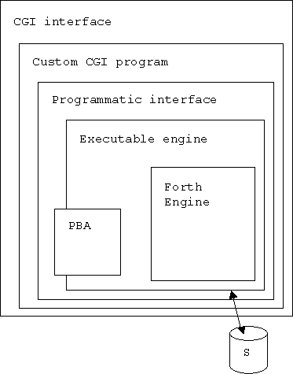

|
sanbachs.NET Serving the DataPerfect* Community |
| Home > Firestorm > Principles of Operation |
| Last updated: December 5, 2000 |
Firestorm – Principles of Operation
Firestorm is written entirely in the ANSI C programming language.
A firestorm program consists of a handful of object files linked together. It allows certain operations on the panel data files, index file, and text file of a DataPerfect database (called here the subject database, S). The object files include the Forth engine itself (F), an interpreter (E), a description of the subject database (PBA), and either a command line interface (C) or a programmatic interface (P).
The description of the subject database consists of a subset of the information in its structure file, and is called the Panel Byte Array or PBA. A utility program, METADXP.COM reads in the structure file of the subject database and prepares a transaction log file for import into the metadatabase (M). A DataPerfect report defined in the metadatabase produces the PBA source code. For completeness, another report in this database can produce a STE file, which can be converted into a structure file by the utility program DPIMP.COM.
| Legend |
|
|
|---|---|---|
The command line interface allows certain operations from the command line on a UNIX-like system or in the DOS box on Windows systems.
The command line interface has also been called from Perl scripts to produce web pages in real time, using the Common Gateway Interface (CGI). For an example of this kind of web application, see The Computerized Ancestor. This webapp features something quite a bit like the DataPerfect lookup mechanism.
More recent webapps have been created using a technique diagrammed below. A main program has been written in the C programming language to accept input from an HTML form. This program calls a function named FSquery. Numerous implementations of the FSquery function have been written, each of which, when linked with the main CGI program and the engine, produces a web page in real time, based on the content of the subject database. For an example of this kind of webapp, see the Know & Enjoy Mexico travel site. Another example is a map demonstration, showing how any one of over two million different maps can be generated by this kind of CGI program.
|  | ||
Other possible uses of Firestorm include a Perl DBI, a COM component callable from Visual Basic, and an ODBC interface. Each of these could be constructed by writing an interface program like the command line interface or the programmatic interface, but providing the necessary functionality. This is shown in the diagram below.
Such programs have yet to be written.
Contacting sanbachs.NET
Sign or browse our guest book.
webmaster@sanbachs.comA. Lewis Bastian, Jr.
Bruce Conrad
Thom Boyer